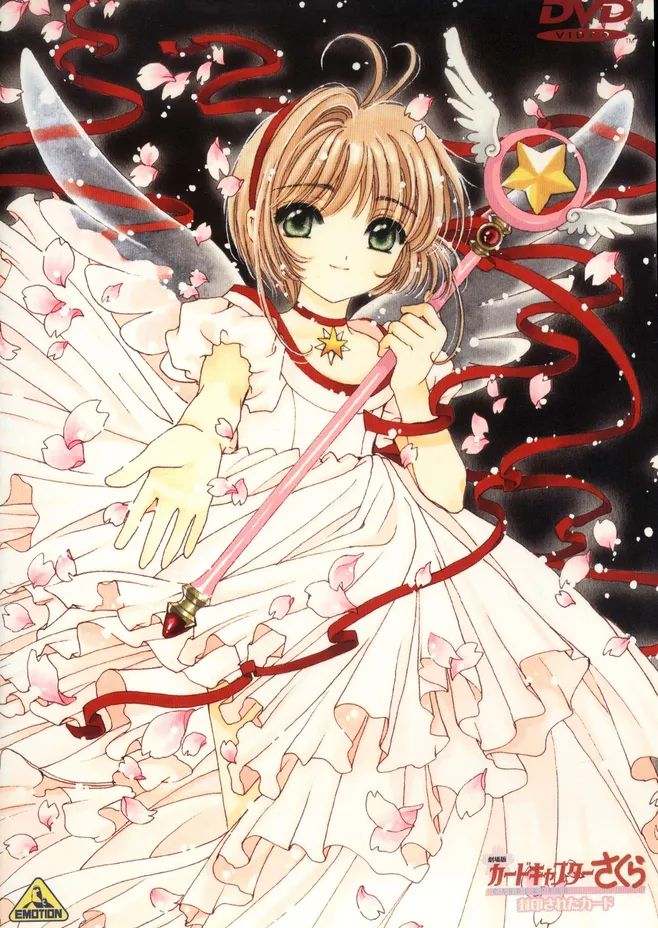
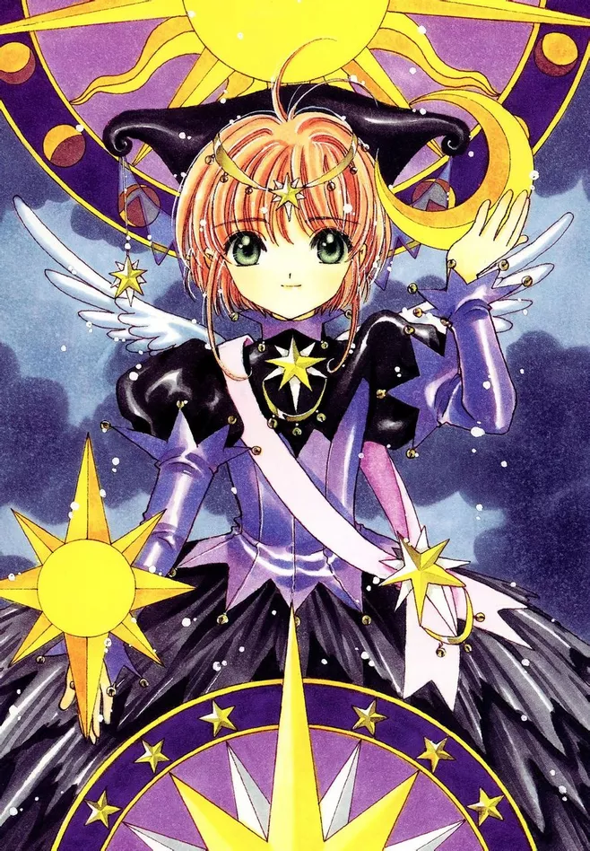
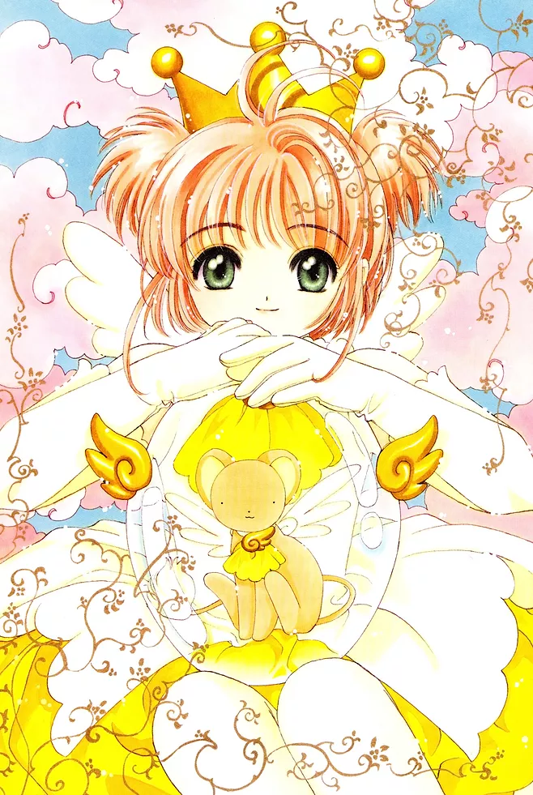

木之本樱
木之本樱，日本漫画《魔卡少女樱》及其衍生作品的女主角。初登场为友枝小学的四年级学生。一次意外被可鲁贝洛斯选定为库洛·里多的继承人，并被称为“库洛魔法使”。
人物介绍
- 年龄：10－12/13岁(小四至初一)
- 生日：4月1日
- 星座：白羊座
- 血型：A型
- 家人：母亲木之本抚子于她三岁时过世，现与哥哥桃矢还有父亲藤隆同住，还有大道寺知世(远房表姐妹)
- 擅长：烹饪、运动
- 喜爱的食物：海鲜、面类
- 讨厌的食物：蒟蒻
- 擅长烹煮：松饼
- 喜欢的颜色：粉红色、白色
- 喜欢的花：樱花
- 喜爱的科目：音乐、体育
- 讨厌的科目：数学
- 男友：李小狼
- 所属社团：啦啦队
- 害怕的东西：幽灵
- 最想要：一个新书包
- 使用魔力：黑暗力量(库洛·里多魔力)、星星力量(小樱自身魔力)、梦之力量(小樱成长后的新魔力)
角色经历
- 接触魔法：某天在家中的书房木之本樱无意中打开了封印库洛牌的书导致卡牌全部丢失，从此，受封印之兽小可的委托，小樱要把到处作乱的库洛牌收服。
- 遇到小狼：为了收集库洛牌而转学到友枝小学的李小狼被分配到了和木之本樱的班级，但是他对小樱的态度并不十分友好，打算和小樱各自收复库洛牌。
- 最后的审判：在小樱将所有库洛牌都被收复完毕之际，库洛牌守护者月不愿承认小樱是自己的新主人，宣布将对小樱和小狼进行最后的审判。最终小樱得到月的认同。
- 小樱牌：本以为一切都已结束，但随着艾利欧的到来，小樱的魔杖展现了新的姿态——星之神杖，小樱需要将库洛牌变换为小樱牌。
- 爱：全部小樱牌转换完毕后，艾利欧回国，小狼也即将离开。此时小樱终于悟出了自己对小狼的感情，并创造出了“爱”牌，并与“无”牌结合成了“希望”牌。
- 透明卡牌：小樱做了一个不可思议的梦之后，发现自己的卡牌全部变成了完全透明的卡牌，并且神杖变成了全新的姿态——梦之杖。
登场记录
| 作品类型 | 作品名 |
| 漫画 | 《魔卡少女樱》 |
| 漫画 | 《翼·年代记》 |
| 动画 | 《魔卡少女樱》 |
| 动画 | 《翼·年代记》 |
| 手游 | 《永远的7日之都》 |
| 手游 | 《食之契约》 |
人物图片



性格属性
开朗可爱，活泼单纯，害怕孤独，善良单纯，是个没有心机的女孩子。喜欢运动，运动神经超级发达，也很喜欢音乐。非常珍视与他人的感情，也非常注重别人的安全，为了保护大家常常置自己于危险而不顾。
非常害怕幽灵鬼怪，也因为这个缘故，非常讨厌黑暗，把什么东西联想到鬼便恐惧得根本停不下来，但是当确定是库洛牌作祟时会马上变得非常勇敢坚定。
有点粗神经，即使众人都已察觉出李小狼喜欢她，她仍对周围的一切毫不知情。